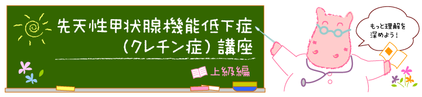
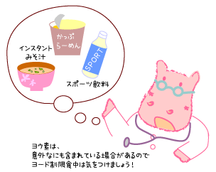

先天性甲状腺機能低下症（クレチン症）講座INDEX > Lesson26:ヨード制限食
|  |
Lesson26 : ヨード制限食
26-1 ヨード制限食
先天性甲状腺機能低下症（クレチン症）の病型診断を行うために、ヨード（ヨウ素）を制限した食事を摂ることになります。
ヨードが多く含まれるものとして、わかめ・昆布などの海藻類は有名ですが、意外なものにもヨード（ヨウ素）が含まれています。
ヨード制限を行うための、詳しい情報が掲載されているサイトをご紹介します。
26-2 いろいろなものに含まれるヨード（ヨウ素）
大人のヨードの必要量は1日100～150マイクログラム（0.1～0.15mg）といわれますが、日本人は1～4mg摂取しているといわれます。
日本では昆布からの摂取が最も多く、昆布だしをとったみそ汁1杯で3mgのヨードと計算されています。
| 外食の場合、調味料など何が入っているかわからないので、ヨード制限食中は、可能な限り外食を控えるのが賢明です。 昆布エキスも様々な食品に使われている頻度が高いので、インスタントみそ汁やだし入りの味噌や醤油、カップ麺や合わせ調味料なども避けるのが無難といえます。 意外なものとして、飲み物の中にもヨード（ヨウ素）が含まれているものがあります。アサヒ飲料の「十六茶」、「アクエリアス」にも入っています。特定の銘柄を禁止するのでは混乱するので、「スポーツ飲料」は全て避けます。 外遊魚は注意が必要で、特に「たら」にはかなり含まれているようです。 また、外国の「塩」にはヨード添加のものがあるので、外国産のポテトチップス、ナッツ、サラミ、ベーコン、ソーセージ、ピザ、パンなども注意が必要です 。 |
 |
26-3 ヨード制限における摂取禁止食品
| 絶対禁止品目*1 | 海藻類（コンブ，ワカメ，海苔，ヒジキ，モズク，テングサ） 昆布加工品（おぼろこんぶ，とろろこんぶ，昆布茶） コンブだし 及び うまみ調味料 昆布エキス含有食品 ヨード卵 |
|---|---|
| 大量摂取禁止品目*2 | テングサ加工品（寒天，ところてん，羊羹） たら 及び たらを使用した練り製品（蒲鉾，ちくわ，はんぺん，ふかし） 貝，えび 青身魚（さば，いわし，かつお，ぶり，にしん） 赤身魚（まぐろ，さけ，ます，シーチキン） 補助栄養食品（サプリメント）*3，自然食品類*3 牛乳 |
【註】
＊１：ヨード含量がきわめて多いため，絶対に禁止する品目
＊２：ヨード含量は多いものの，大量に摂取しなければ良い品目
＊３：成人の1日必要量（150μg）程度のヨードが含有されているものがある．
「うま味調味料」にはグルタミン酸ナトリウム、イノシン酸ナトリウム、グアニル酸ナトリウムなどが含まれ、ヨードは検出されない。